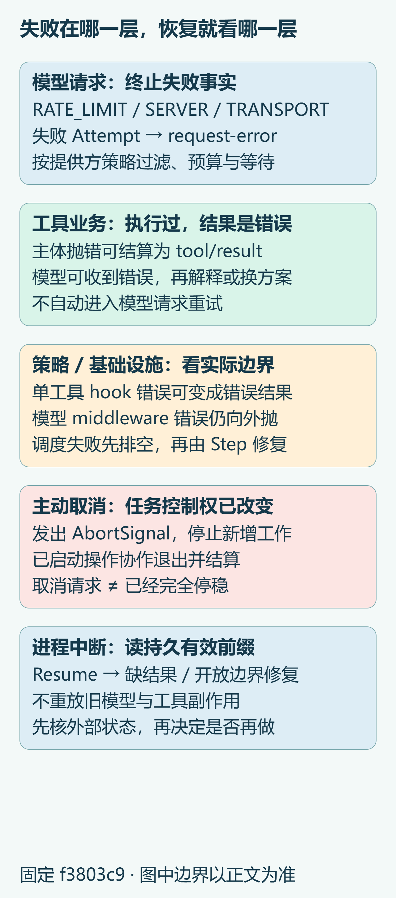
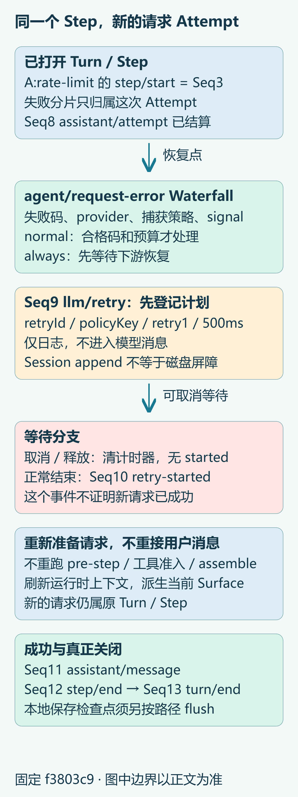
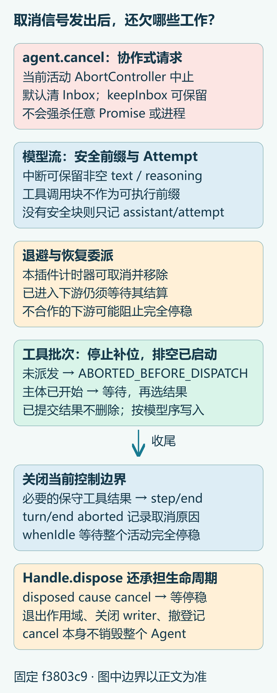
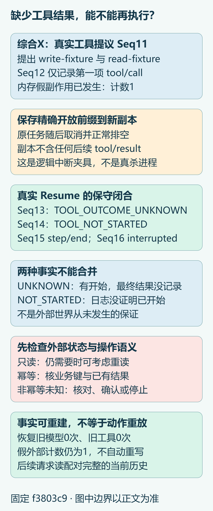

H20 作者审阅页 · 未发布。实际 LessonMarkdown 的静态渲染，折叠答案可展开；课程版本的复制交互已另经 React 挂载测试。图片在本页映射为相邻文件，不改变教材的 /course-media 路径。
Agent 可靠性工程：取消、重试与故障恢复
280～380 分钟（分三段：失败与重试90～120、取消与工具95～130、恢复与综合95～130；作者估算，环境另计，待试读）
同一个代码研究任务，五次失败该怎样继续？
Agent 接到任务：“读取项目文件，执行测试，并总结构建失败原因。”它正准备模型请求，提供方却返回限流；稍后另一次请求已经流出文字，网络突然断开。第三次工具真的执行了测试，只是测试失败。第四次用户点击停止，工具还没有退出。第五次进程消失，只剩已经保存的会话前缀。
先在纸上分别写下一步：继续、等待、重试模型、重读材料、检查外部结果，还是停止并请人决定？再补一句“我依据什么事实”。暂时不要用一个自动重跑整个任务的按钮覆盖五种情况：用户消息可能已经接纳，工具可能已经写入，取消也可能刚刚改变了继续执行的授权。
H17让事件能重建历史，H18让指定范围的事实能够保存与恢复，H19让当前模型输入在容量内取舍。H20补上执行控制：恢复必须依据失败发生的位置、已经提交的事实、外部副作用和当前控制权。 本课最终交付一条可核对轨迹，从失败Attempt、退避、工具开始，到取消排空和新实例恢复。
官方固定Commit仍是 f3803c96974ad4a94195fb97e5c637e9c2a3afe3。S编号给出实现与断言。本课Provider是受控Adapter，工具只操作内存假效果，磁盘均为新建JSONL夹具；“真实组件”不表示真实付费模型或完整Harness应用。
先定位故障，别先套重试
把调用看成几道边界：Agent接纳用户输入，准备模型请求，消费流，提交Assistant，再按提议派发工具，最后提交结果。错误在哪道边界出现，决定当前组件看得见什么；出现同一句“失败”，并不表示已发生的事情相同。
| 故障 | 当前可观察事实 | 可考虑的恢复与前提 |
|---|---|---|
| 模型请求故障 | Adapter规范终止失败、Attempt流、规范code | 在请求恢复点按策略判断，可能重新计费 |
| 工具业务故障 | 工具已执行，tool/result为错误 | 让模型解释或选择下一步；不能直接当作模型限流 |
| 执行基础设施故障 | 准入、插件、流水线或调度阶段抛错 | 看具体错误边界，必要时排空、补缺结果并结束Turn |
| 用户主动取消 | 当前运行signal已abort，用户不希望继续 | 停止安排新工作，等待已启动工作达到结算边界 |
| 进程中断 | 内存状态消失，只能读持久有效前缀 | 取得所有权，修复开放语义；不能重放旧工具副作用 |
故障分类不是统一的自动执行表。比如单工具pre hook抛错，可被流水线规范成错误结果；模型middleware抛错，则仍可能直接结束Turn。只说“插件错误都重试”或“插件错误都结束任务”都会漏掉实施边界。实践B把工具业务错误和工具策略错误都交给真实流水线，下一模型请求读到错误结果，request-error次数仍为0。

七分钟基础回顾：Promise表示以后会结算的工作，不是一个通用可强杀对象。AbortController发出中止，AbortSignal把状态和原因传给愿意观察的组件。请求取消后仍要有人等待清理和结果，这叫排空；完全停稳意味着本次拥有的活动已经到达可确定的结束边界。这个边界仍不证明外部业务成功，也不抹掉已发生写入。与撤回未发货订单相比，已经在路上的包裹还需要明确收尾；类比不能代替各工具自己的取消协议。
LlmFailure：程序看code，人读message
LlmFailure保存可序列化失败事实：message、开放字符串code，以及可选status、providerRetryAfterMs、requestId等。它不是一张封闭枚举，插件还可扩展规范码。LlmError是带code与failure快照的实时Error；日志能保存failure，不能把任意SDK对象和调用栈当作通用恢复协议。依据S01 · LlmFailure、S02 · LlmError。
| 规范code | 本课如何理解 | 默认normal是否合格 |
|---|---|---|
| RATE_LIMIT | 临时速率限制，仍要检查账户与提供方事实 | 是 |
| SERVER | 提供方服务端故障 | 是 |
| TIMEOUT | 超时，不证明提供方没有处理请求 | 是 |
| TRANSPORT | 网络传输故障，可能已经流出部分内容 | 是 |
| EMPTY_RESPONSE | 正常完成却没有任何内容，被适配器识别为失败 | 是 |
| AUTH | 凭据或权限问题 | 否 |
| QUOTA | 配额或余额耗尽 | 否 |
| CONTEXT_WINDOW_EXCEEDED | 已确认输入超过上下文容量 | 否，通常交专门恢复 |
| ABORTED | Adapter报告中止；还要检查Agent自身signal | 否 |
status描述HTTP响应，code描述程序决策类别，二者不是同一个字段。固定DeepSeek适配器先考虑鉴权、配额、限流等分类，再处理上下文与一般请求错误；同一个HTTP 429不应靠本课猜成任何业务结论。requestId方便追查某次提供方请求，不能当工具幂等键。真实HTTP解析的依据是S03 · providerError，本课运行的Adapter直接提供受控失败事实，没有联网验证所有适配器的归一化。
最终Adapter抛出LlmError时，Runtime会验证并分离它的结构化事实。普通Error上的任意SDK code不能自动冒充Harness分类；无法可信规范的错误可回退UNKNOWN。依据S04 · normalizeLlmFailure。这解释为什么应在适配器边界规范化，而不是在重试插件里用message包含“busy”作为授权。
单次模型流与持久请求恢复由不同对象负责
ctx.llm.stream(options)消费一次流。Runtime负责路由、适配器边界、消息投影与流协议；默认不在已经交付一半内容后悄悄再发同一个请求。否则两次输出可能混成一个回答，工具参数被拼接，失败Attempt与费用也难以分清。实践A:raw-stream即使挂着Retry插件，直接调用仍只请求一次，返回RATE_LIMIT终止分片。依据S05 · adapterStream、S06 · streamWithRegistration。
Provider路由在登记时捕获解析后的retryPolicy；没有显式配置会得到normal默认值。有一份默认策略，不等于已经安装策略执行器。 dsh-llm-retry是可选插件，执行位置在AgentLoop恢复点。A:no-plugin有真实Loop但不挂Retry，限流仍结束Turn；A:rate-limit挂载后才等待并继续。依据S07 · prepareRoutes policy branch、S08 · LlmRuntime.prepareCall。
正式调用中，Adapter负责协议转换和终止失败规范化，AgentLoop拥有Turn/Step/Attempt与Session提交边界，Retry插件执行提供方策略。直接消费Runtime的其他程序需要自己定义恢复与记录责任，不能自动继承本课的持久恢复。
agent/request-error只接住特定失败
正常模型流以error或aborted的finish终止时，Loop先把紧凑流结算为assistant/attempt，再分发agent/request-error。载荷带agent、turn、step、实际provider、failure、准备调用捕获的retryPolicy和当前signal。监听器返回{kind:'retry'}授权下一次请求尝试；没有恢复决定则向外形成终态失败。依据S31 · step request-error branch、S52 · Events agent/request-error。
这里的Waterfall可以理解成有顺序的恢复链：当前监听者决定处理，或者调用next把判断交给后面；外层还可以等待后面的结果再决定。注册顺序和是否调用next影响优先级，并不是所有策略各自独立“加一次”。
normal先过滤错误码、预算与延迟范围，合格才自己安排等待；不合格、耗尽或超上限则委派。always先await下游恢复，下游已返回retry就直接采用；下游抛错会告警后考虑自己的回退，但取消或释放已经发生时不会继续写计划。依据S24 · recover always branch、S25 · recover normal admission、S26 · recover provider delay branch。
Middleware或消费方自身抛错位于Adapter规范化边界外，不会被无条件改成可恢复提供方故障。A:middleware真实抛出插件错误，Adapter请求0、request-error次数0，Turn结束；如果流已经开始，还可能只留下Attempt供诊断。工具错误也不走这条模型恢复链。依据S06 · streamWithRegistration、S32 · step thrown stream settlement。
Normal：预算、资格和时间共同决定能否重试
RetryPolicyConfig归提供方配置，不放在llm-retry插件自身的config里。插件函数本身没有可调重试字段；本课在Adapter的providerRetryPolicy返回官方resolveRetryPolicy结果。依据S09 · default constants、S10 · RetryPolicyConfig / ResolvedRetryPolicy、S12 · resolveRetryPolicy、S13 · validateConfig。
const policy = resolveRetryPolicy({
mode: 'normal',
maxRetries: 2,
retryableCodes: ['RATE_LIMIT', 'SERVER'],
backoff: { initialDelayMs: 500, maxDelayMs: 10000, jitterRatio: 0.1 },
}, 'fixture.provider.retryPolicy')这是提供方侧的组合片段，完整装配在公共程序。默认maxRetries为5，合格码是表中五类瞬态错误，初始退避500ms、本地上限10000ms、抖动比例0.1。maxRetries指初次请求以外可以增加的尝试：固定提供方、相同策略、同一Step全部失败时，最多6次调用。A:budget使用这些真实默认值，实际请求6次、计划5次，最后Turn为error。
| 调用序号 | 若仍失败 | 默认预算下的下一动作 |
|---|---|---|
| 1 | 第一次失败 | 安排retry1 |
| 2 | 第二次失败 | 安排retry2 |
| 3～5 | 连续失败 | 依次安排retry3～5 |
| 6 | 仍失败 | 本策略预算耗尽，委派；没有其他恢复则结束 |
状态由Session Projection读取，键包含provider与完整policyKey。normal的key还包含预算、排序后的错误码集合及全部退避字段；不能把不同提供方或不同策略的计数当作一个全局总额。step/start与turn/end清除这份计数状态；回放投影是重建已记录事实，不是重新启动旧计时器。依据S16 · retryPolicyKey、S17 · retryStateKey、S19 · llmRetry projection。
退避：算对等待时间，也算清谁能取消
立即重复请求可能在服务繁忙时继续施压。指数退避逐步增大本地等待；抖动把同时失败的一组客户端稍微错开。我们的分析：这样能减少同步重试峰值，但本课没有真实服务负载与延迟收益数据。
固定算法中，r是从1起的重试编号，d0是initialDelayMs，M是maxDelayMs，j是jitterRatio，U是0～1随机样本：先算E=min(d0×2^min(r−1,1024), M)，再乘(1−j+2jU)，最后再与M取min。指数封顶和最终封顶是两步。依据S15 · localDelay。
例：d0=500、M=10000、j=.1。第一次U0得450ms，U.5得500ms，U1得550ms；第二次U1得1100ms。A:jitter固定U1，实际计划550、1100、2200、4400、8800、10000；达到上限后正向抖动也不能越过M。j=1与U0的合法边界可得0，但不是让生产代码忙等；对应官方测试只作静态选读，本课没有把它算成动态通过。
Provider的Retry-After是另一项输入。适配器可把合法秒数或日期转换成providerRetryAfterMs。插件接受范围内的有效正值时原样使用，不再加本地抖动，也不一定选两者最大值。
| 提供方延迟与M10000 | normal | always |
|---|---|---|
| 9000ms | 接受9000 | 接受9000 |
| 20000ms | 委派，不安排本插件计划 | 回退本地退避，本课为500 |
| 不存在或不可用 | 本地退避 | 本地退避 |
实践的random使用官方RetryInternals非序列化测试钩子，时钟只在隔离子进程替换setTimeout/clearTimeout；官方算法和监听器仍真实运行。我们推进虚拟毫秒，不等待真实500或9000毫秒。它不证明宿主时钟精度、网络超时或生产性能。依据S14 · RetryInternals、S18 · cancellableDelay、S26 · recover provider delay branch。
Always：下游优先，不保证最终成功
always没有normal的错误码过滤与maxRetries限制，AUTH、QUOTA等永久性错误也可能持续请求。它不是默认推荐配置，也不保证凭据会自己变好；一次次调用可能产生不断增长的费用和等待。A:always只给两个失败再成功，最多三次，实验始终有界。
下游优先很重要。专门恢复可能先改输入，再要求重试；always不能在它之前无脑重发。A:downstream由下游返回retry，普通调用两次，却没有本插件llm/retry事件；A:downstream-error才走always回退。不能因此说“重试了就一定有通用Retry事件”。
等待下游也带来责任：若它忽略signal且永不结算，always无法强杀这个Promise，Agent和插件释放都可能迟迟无法完全停稳。B:delegated用门控模拟“不及时退出”，取消与释放先保持pending，放行门控后才完成，且没有第二次模型请求。本课绝不运行真正无法停止的无限Provider循环。依据S20 · track、S24 · recover always branch、S27 · apply disposal effect。
计划、等待结束与请求成功，是三种事实
A:rate-limit给出最小真实轨迹。一个Turn、一条用户消息、一个Step；序号是该夹具的SessionSeq，不是每个项目都固定的数字。
| Seq | 事件或动作 | 它确立了什么 |
|---|---|---|
| 1 / 3 | turn/start、step/start | 当前控制边界已打开 |
| 5 | user/message | 用户输入已接纳，不应因重试再写一遍 |
| 8 | assistant/attempt | 第一次失败流已结算，只作诊断历史 |
| 9 | llm/retry | retry1计划已提交，等待500虚拟毫秒 |
| 10 | llm/retry-started | 等待完成，即将进入下一次请求准备 |
| 11 | assistant/message | 后续请求产生可见成功回答 |
| 12 / 13 | step/end、turn/end | Step与Turn真正闭合 |
RetryId关联同一恢复链，policyKey表明适用的完整策略，retry记录次数。retry-started不证明下一请求已经发到Provider，更不证明成功；后续准备也可能失败或被取消。两类Retry事件没有SurfaceOp，不作为普通消息增加模型Token。依据S21 · backoff commit/wait、S22 · LlmRetryEventData / LlmRetryStartedEventData。
“先记录、后等待”首先是逻辑Session提交顺序。 插件在append计划后直接等待，没有在这里调用flush。若挂了write-behind后端，不能把官方文档的“先持久”概括成任意后端已经fsync。H18的提交/可见/耐久分层仍有效；C和X另执行真实flush才建立本轮保存证据。等待中取消后，计划可保留而没有started；这不是日志损坏。依据S21 · backoff commit/wait、S53 · SessionEventMap turn/end。

重试改变Attempt，不重新接纳任务
Loop在pre-step中领取Inbox、固定当前模型选择、解析工具准入并assemble提示词；进入Step后才开始请求尝试循环。一般请求重试复用这份assembly与toolSet，不重新运行pre-step，也不重新接纳同一用户消息。A的各Loop分支核pre-step、工具resolve、assemble各1次。依据S28 · ReactLoopAgent.preStep、S29 · ReactLoopAgent.step attempt loop、S30 · step firstAttempt admission。
每次尝试仍会重新prepareCall，绑定当时适配器，并刷新已登记运行时上下文、协调当前System Prompt节点、从当前Surface派生请求。H19专门恢复可以改变Surface，因此不能把“不重新assemble”误说成“请求对象逐字永远不变”。普通输入只首次提交，循环自己的上下文投影则可以原位更新。底层已弃用的agent/request仍在固定实现里；本课不新增该监听器，计数使用夹具包装真实服务方法。
Step直到成功回答及其相关工具执行或终止失败后才关闭。一次请求失败不新开Turn，也不把同一用户消息放回Inbox。失败Attempt中的紧凑流保留诊断分片，却不进入deriveMessages；A:partial甚至给出完整工具提议后再传输失败，工具执行0次，重试请求没有FAILED_PARTIAL。失败分片可被记录，不等于模型可见。
取消：发信号、等结算、再释放
AgentCancelCause允许user、parent、hook与disposed；hook还保留reason。agent.cancel(cause, options)中止当前活动信号，默认清除待处理Inbox；keepInbox=true保留尚未开始的输入。依据S35 · ReactLoopAgent.cancel、S36 · CancelOptions、S54 · AgentCancelCause。
agent.cancel({ kind: 'user' }, { keepInbox: true })
await agent.whenIdle()
// 检查turn/end与结果，再决定后续工作；whenIdle本身不是成功回执。这是已有活跃Agent的控制片段。keepInbox不让当前Turn“继续跑完”，也不承诺自动唤醒留下的任务。B:inbox-keep先取消第一任务，队列仍有第二条，当前请求仍只有一次；之后显式followup第三条，才依次处理留下的第二条与第三条。默认取消则清空待办。
whenIdle追踪activityDone，遇到活动被后续唤醒工作替换会继续等待。它要等流、当前恢复和已启动工具到达结束边界；检查status或丢掉Promise都不能替代它。Turn可能以error或aborted结束，Agent实例仍可在以后接新任务。依据S37 · ReactLoopAgent.whenIdle、S38 · ReactLoopAgent.kick、S39 · turn ending classification。
AgentHandle.dispose是生命周期所有者的操作：默认工厂发disposed原因取消并等whenIdle，再撤作用域、关闭持久writer、离开实时登记。cancel只改变当前活动控制，不销毁整个Agent，也不删除历史。Retry插件的释放又是另一层：注销监听器，中止自身lifetime，并等待捕获的恢复Promise排空。依据S40 · initializeAgent teardown、S27 · apply disposal effect。

流中取消：保住安全前缀，不执行半个工具调用
已经展示给用户的内容不能靠关掉页面当作没发生。流被当前Agent信号打断时，Loop询问interruptedBlocks：保留非空text和reasoning块，丢掉工具调用及未知开放块。若有可安全结算内容，写assistant/message并标interrupted:true；没有则只记assistant/attempt。依据S32 · step thrown stream settlement、S34 · BlockAssembler.interruptedBlocks。
B:stream-prefix先交付SAFE_PREFIX，再交付未完成工具参数，取消后持久消息只有安全文本，没有可执行工具块。B:stream-empty尚未交付安全块，最后只有Attempt。这里保存reasoning是固定实现的块规则，不意味着产品应把推理内容都展示给用户；UI与持久事实仍有各自消费者。
实时agent/assistant-stream发start/chunk/end；committed end在匹配Session事件提交后发布，提交失败可abandon。实时看到一段分片，不证明磁盘已经保存，也不证明一次完整Assistant消息已经形成。依据S33 · AssistantStreamAttempt.settle。
还要区分Adapter报告ABORTED与当前Agent信号真的取消。A:adapter-aborted的Provider终态是aborted，但Agent signal没有abort；normal不恢复后，最终Turn是error，failure.code为ABORTED。B真正用户取消才记录turn/end aborted及用户原因。不能只看一个单词合并两种控制状态。
工具取消：未开始与已开始，需要不同结果
流水线在准备前、pre/审批/guard之后和真正dispatch前检查取消。主体尚未开始时可返回ABORTED_BEFORE_DISPATCH；主体已经开始则先等它返回或抛错，再选择结算。原caller signal与around-wrapper的替换信号还会融合，不能换一根新signal绕开调用者取消。依据S41 · ToolExecutionPipeline.prepare、S42 · dispatchToolBody。
取消不等于回滚。B:tool-after在内存计数增加后挂住，发cancel时whenIdle仍未完成；放行后得到ABORTED，计数仍1。如果主体已经给出业务错误，流水线会保留错误，不把一切都改成ABORTED。B:tool-business的测试命令失败被转为错误tool/result，模型随后解释，Turn仍可completed；B:tool-policy在主体前失败，主体0次，也形成模型可见错误。依据S43 · complete。
批次取消停止继续补位，等待已经启动的dispatch，再按模型原顺序提交。B:parallel中first与second已启动，first结果提交时取消；first成功结果保留，second排空后ABORTED，third主体未开始，收到合成tool/call与ABORTED_BEFORE_DISPATCH结果。执行完成顺序、最终观察通知和持久模型顺序不能混成一个时钟。依据S44 · runGroup、S45 · BatchSettlement.skip。
内部调度失败则先排空已启动调用，再以ToolBatchExecutionError保留部分结果向上拒绝。Loop在关闭失败Step前用ToolCallRecovery补尚未结算的提议。它不同于一次正常工具业务错误，也不进入模型请求重试。该调度故障组合本轮只核源码与官方测试分支；不要把B的取消测试当作全部调度器故障都验证了。并发分类抛错本身会失败关闭为exclusive，并不自动构成调度器崩溃。依据S55 · turn live-step repair/finally、S56 · executionMode。
结果未知：先查外部事实，再谈重新执行
只读工具重复读取可能只是重新取得材料；写工具可能创建第二份资源。日志没有tool/result，只能说明结果未记录，不能证明动作没发生。ToolCallRecovery区分模型已提议但未见tool/call的TOOL_NOT_STARTED，与已有开始却缺结果的TOOL_OUTCOME_UNKNOWN。已提交结果会从待答集合移除；step/end清除该Step的待答，恢复不回头凭空修旧Step。依据S46 · ToolCallRecovery.observe、S47 · ToolCallRecovery.results。
在官方记录顺序和合法前缀内，NOT_STARTED表示未登记为开始，UNKNOWN明确保留不确定性；两者不能并成一个“工具失败”。恢复读的是指定耐久前缀，也不能对任何自定义执行器或外部系统承诺“日志没开始就绝对没有外部效果”。遇到可能有副作用的未知操作，先查业务状态或请用户决定。
实践D让内存Map保存operation-1的结果：效果已经发生一次，恢复只追加保守错误，不调用主体，计数仍1。按同一个教学幂等键再次查询返回原结果，计数仍1；故意直接执行非幂等函数则变2。幂等针对业务结果设计，不是网络请求文本一样就自动成立。 这个键机制是教学策略，不是Harness已为全部工具安装的通用能力。
| 操作语义 | 可考虑的决定 | 仍要核查 |
|---|---|---|
| 只读 | 仍需要时重新读取 | 数据是否变化、权限与成本 |
| 幂等写 | 用业务键核既有结果，再决定 | 键是否由外部系统真实强制 |
| 非幂等且结果未知 | 核外部状态、请确认或停止 | 不重复创建、付款或发送 |
| 已有最终结果 | 使用已记事实 | 不因“恢复”再做一次 |

Crash Recovery与请求Retry，时间尺度不同
请求重试发生在当前活着的Agent、开放Step与当前signal内。Crash Recovery先取得持久Session写所有权，再读物理有效历史，追加interruptedTurnClosers普通批次，重建新Agent与运行能力。它不会把旧Provider请求、计时器和工具再执行一遍。依据S48 · openTurnClosers、S49 · interruptedTurnClosers、S50 · AgentLoop.resumeWith。
C保存失败Attempt、Retry计划和成功回答后显式flush，关闭旧Agent/Context/后端；新Context与新后端重读header/事件完全相同，Resume后派生消息相等，旧模型请求0。取消退避的版本则保存有计划、无started的合法历史；重开也不启动旧计时器，新输入才发新任务。这里是同进程新实例，不是独立进程或真实断电。
X进一步保存工具已开始、结果未记的开放前缀。真实Resume追加两类结果、step/end、turn/end interrupted与end-seed，原始前缀不变。修复发生在Agent发布前，不能只订阅新的session/event就当作已经读到了全部恢复事实；本课通过真实SessionHandle.read核对。这个细节正连接H17的日志与实时通知、H18的恢复准备。
与H19共存：输入修复拥有独立预算
CONTEXT_WINDOW_EXCEEDED通常先需要改变输入，而不是等待同一过大请求自己变小。Basic Compaction检查规范错误、独立maxOverflowRetries及Surface替换generation进展；没有有效变化就不能据此重试。默认normal不把该code列入合格集合，会委派后面的专门恢复。依据S51 · Basic request-error listener。
A:compaction-normal先装Retry，再装Basic：长上下文被摘要，普通请求2、辅助摘要1，没有llm/retry。A:compaction-always同样先等下游Basic，再采用它的retry，也没有消耗通用计划。这只验证列明注册顺序的两种组合；改错误集合或顺序需要重新推导。
通用策略按Provider/policyKey计数，Compaction有自己的进展条件与预算，图片省略还可以拥有另一种输入修复。不能把数字直接相加，宣布全应用永远最多固定N次。哪些请求重复输入、缓存能否复用、摘要是否抵消成本，都需要真实Provider证据；本课没有测费用、缓存命中或吞吐。
运行准备：真实组件，受控故障与有界时间
在AI Foundry仓库根使用Node24和固定源码；完整依赖锚点准备见lab/README及作者README。runner先核9619项固定源码/配置/文档hash，再逐项核46项直接与传递依赖的版本/integrity。程序复制到全新临时根运行，不往业务项目安装Harness依赖。
node docs/deepseek-harness-v2/h20/scripts/run-labs.mjs
node docs/deepseek-harness-v2/h20/scripts/run-labs.mjs A rate-limit
node docs/deepseek-harness-v2/h20/scripts/run-labs.mjs B parallel
node docs/deepseek-harness-v2/h20/scripts/run-labs.mjs C recovered
node docs/deepseek-harness-v2/h20/scripts/run-labs.mjs D unknown
node docs/deepseek-harness-v2/h20/scripts/run-labs.mjs X默认45个TAP执行项：C6/D39。命名A/B/C/D是实践编号，不是证据等级。模型无真实联网，工具不触碰用户文件；退避为虚拟时间，门控显式释放，循环有硬上限。真实JSONL只用于C/X的Windows原始格式，同进程新实例；E级、跨进程、真实崩溃/断电、其他平台与真实费用均未验证。
所有新文件和空目录保留登记，没有清理脚本；H18/H19保留产物不动。原始记录含参数、exit、stdout/stderr、程序hash及scratch，behavior-traces保存每个实际用例事件。失败记录也保留，不修改官方源码求PASS。
想深入再看：公共准备完整程序
import assert from 'node:assert/strict';
import {Context} from '@deepseek-ai/cordis';
import SessionStore,{SessionId,Session,ToolCallRecovery,interruptedTurnClosers} from '@deepseek-ai/dsh-session';
import LlmRuntime,{LlmAdapter,LlmError,resolveRetryPolicy,createUserMessage,createAssistantMessage,createToolResultMessage,ToolCallId} from '@deepseek-ai/dsh-llm';
import SessionProjectionRegistry from '@deepseek-ai/dsh-session-projection';
import SystemPrompt from '@deepseek-ai/dsh-system-prompt';
import ToolsService,{defineTool} from '@deepseek-ai/dsh-tools';
import {NativeToolExecutor} from '@deepseek-ai/dsh-tool-executor-native';
import AgentRegistry from '@deepseek-ai/dsh-agent';
import AgentLoop from '@deepseek-ai/dsh-agent-loop';
import * as Retry from '@deepseek-ai/dsh-llm-retry';
import * as Jsonl from '@deepseek-ai/dsh-session-persistence-jsonl';
import TokenMeter from '@deepseek-ai/dsh-token-meter';
import Basic from '@deepseek-ai/dsh-compaction-basic';
import {mkdtemp,writeFile} from 'node:fs/promises';
import {resolve} from 'node:path';
import {Clock,pump,until,gate} from './clock.ts';
export {assert,SessionId,Session,ToolCallRecovery,interruptedTurnClosers,LlmError,resolveRetryPolicy,createAssistantMessage,createToolResultMessage,ToolCallId,gate,pump,until};
export const user=(text:string,kind='user')=>createUserMessage({source:{kind},content:[{type:'text',text}]});
export const text=(value='done')=>[{type:'text-delta',index:0,text:value},{type:'finish',reason:{kind:'stop'}}];
export const call=(names:string[])=>[...names.flatMap((name,index)=>[{type:'block-start',index,blockType:'tool-call'},{type:'block-end',index,block:{type:'tool-call',id:ToolCallId('call-'+index),name,arguments:'{}'}}]),{type:'finish',reason:{kind:'tool-calls'}}];
export const visible=(messages:any[])=>messages.flatMap(m=>m.content).filter(b=>b.type==='text').map(b=>b.text).join('\n');
export class Adapter extends LlmAdapter{
requests:any[]=[];entries:any[]=[];policy:any;summaryCalls=0;
override providerRetryPolicy(){return this.policy;}
async resolveModel(provider:string,model:string){return {provider,id:model,name:model,context:{contextWindow:100000},defaultMaxTokens:128};}
async *stream(options:any):AsyncGenerator<any>{
this.requests.push(structuredClone({...options,signal:undefined}));
if(options.purpose==='compaction'){this.summaryCalls++;yield*text('Goal: inspect fixture. Next: verify external state.');return;}
const entry=this.entries.shift();assert.ok(entry,'bounded adapter script exhausted');
if(entry instanceof Error)throw entry;
yield* typeof entry==='function'?entry(options):entry;
}
}
export async function fixture(options:{policy?:any;retry?:boolean;random?:()=>number;disk?:boolean;root?:string;downstream?:(p:any,next:any)=>any;compaction?:boolean}={}){
const ctx=new Context();await ctx.plugin(SessionStore);const facts=new Map<string,any[]>(),frames:any[]=[],errors:any[]=[],counts={preStep:0,prepareCall:0,resolveTools:0,assemble:0,recovery:0};
ctx.on('session/event',(s,e)=>{const a=facts.get(s.id)??[];a.push(e);facts.set(s.id,a);});
let root=options.root;if(options.disk){assert.ok(process.env.H20_RUN_ROOT);root??=await mkdtemp(resolve(process.env.H20_RUN_ROOT!,'h20-jsonl-'));await ctx.plugin(Jsonl,{root,compression:'none'});}
await ctx.plugin(LlmRuntime);await ctx.plugin(SessionProjectionRegistry);await ctx.plugin(SystemPrompt,{includeHarnessIdentity:false,personaPrefix:'Use only controlled fixture facts.'});await ctx.plugin(ToolsService);ctx.tools.setExecutor(new NativeToolExecutor(ctx));await ctx.plugin(AgentRegistry);await ctx.plugin(TokenMeter);
const adapter=new Adapter();adapter.policy=resolveRetryPolicy(options.policy,'fixture.provider.retryPolicy');ctx.llm.registerAdapter(['fixture'],adapter);
ctx.on('agent/pre-step',async(p,next)=>{counts.preStep++;return next();});ctx.on('agent/request-error',async(p,next)=>{counts.recovery++;return next();});
let retryFiber:any;if(options.retry!==false)retryFiber=await ctx.plugin(Object.assign(async(inner:any)=>Retry.apply(inner,{}, {random:options.random??(()=>0.5)}),{inject:Retry.inject}));
if(options.downstream)ctx.on('agent/request-error',options.downstream);
if(options.compaction)await ctx.plugin(Basic,{auto:true,headroomTokens:0,maxTokens:256,retainTokens:80});
await ctx.plugin(AgentLoop,{agents:[],maxParallelToolCalls:2});ctx.on('agent/assistant-stream',p=>frames.push(structuredClone(p.frame)));ctx.on('agent/error',p=>errors.push(String(p.error)));
for(const [service,key,counter] of [[ctx.llm,'prepareCall','prepareCall'],[ctx.tools,'resolve','resolveTools'],[ctx.systemPrompt,'assemble','assemble']] as const){const original=(service as any)[key].bind(service);(service as any)[key]=(...args:any[])=>{counts[counter]++;return original(...args);};}
const clock=new Clock();clock.install();const handles:any[]=[];
const create=async(id='task')=>{const h=await ctx.agents.create({sessionId:SessionId(id),agentOptions:{provider:'fixture',model:'large'}});handles.push(h);return h.agent;};
const tool=(name:string,execute:any,parallel=false)=>ctx.tools.register(defineTool({name,description:'Safe memory fixture '+name,parameters:{},...(parallel?{isConcurrencySafe:()=>true}:{}),output:{schema:{type:'string'},render:(_a:any,v:any)=>[{type:'text',text:v}]},execute} as any));
return {ctx,adapter,facts,frames,errors,counts,clock,root,retryFiber,create,tool,handles,events:(a:any)=>facts.get(a.id)??[],async close(){for(const h of handles)await h.dispose();await ctx.fiber.dispose();clock.restore();}};
}
export const normal=(maxRetries=2,backoff:any={})=>({mode:'normal',maxRetries,backoff:{initialDelayMs:500,maxDelayMs:10000,jitterRatio:0,...backoff}});
export const failed=(code='RATE_LIMIT',extra:any={})=>new LlmError('controlled '+code,code,extra);
export const summary=(f:any,a:any)=>({events:f.events(a),requests:f.adapter.requests,frames:f.frames,errors:f.errors,counts:f.counts,delays:f.clock.delays,virtualMs:f.clock.now,surface:a.session.surface.nodes,messages:a.session.deriveMessages()});
export async function record(name:string,value:any){await writeFile(resolve(process.env.H20_RUN_ROOT!,'trace-'+name+'.json'),JSON.stringify(value,null,2)+'\n');}想深入再看：隔离依赖完整程序
// 依赖锚点均由作者 runner 按固定上游 lock 完整核验。
import fs from 'node:fs';
import {registerHooks, createRequire, syncBuiltinESMExports} from 'node:module';
import {pathToFileURL} from 'node:url';
const dep=createRequire(pathToFileURL(process.env.H20_DEPS_ANCHOR));
const zod=createRequire(pathToFileURL(process.env.H20_ZOD_ANCHOR));
const native=createRequire(pathToFileURL(process.env.H20_NATIVE_ANCHOR));
const limit=createRequire(pathToFileURL(process.env.H20_LIMIT_ANCHOR));
const entries=new Map(['js-yaml','@eslint-community/regexpp','ajv','node-addon-require-builtin','resolve.exports','semver']
.map(name=>[name,pathToFileURL(dep.resolve(name)).href]));
entries.set('zod',pathToFileURL(zod.resolve('zod')).href);
entries.set('koffi',pathToFileURL(native.resolve('koffi')).href);
entries.set('p-limit',pathToFileURL(limit.resolve('p-limit')).href);
entries.set('@js-temporal/polyfill',pathToFileURL(limit.resolve('@js-temporal/polyfill')).href);
for(const file of ['region','config','summarizer'])entries.set('@deepseek-ai/dsh-compaction-basic/src/'+file+'.ts',pathToFileURL(process.env.HARNESS_SOURCE_CACHE+'/packages/compaction/compaction-basic/src/'+file+'.ts').href);
entries.set('@deepseek-ai/dsh-compaction-image-offload/src/image-offload.ts',pathToFileURL(process.env.HARNESS_SOURCE_CACHE+'/packages/compaction/compaction-image-offload/src/image-offload.ts').href);
registerHooks({resolve(specifier,context,next){return next(entries.get(specifier)??specifier,context);}});
// 用户禁止批量/递归删除；包括上游异常清理路径也不准执行递归 rm。
const rm=fs.promises.rm;
fs.promises.rm=async(path,options)=>{
if(options?.recursive)throw Error('H20 safety guard: recursive removal forbidden');
return rm(path,options);
};
syncBuiltinESMExports();想深入再看：虚拟时钟完整程序
// 教学夹具时钟：只替换本隔离子进程的定时器，不替换官方重试算法。
import {setImmediate as immediate} from 'node:timers/promises';
import assert from 'node:assert/strict';
export async function pump(){await immediate();}
export async function until(predicate:()=>boolean,label='condition'){
for(let n=0;n<1000;n++){if(predicate())return;await pump();}throw Error('bounded fixture did not reach '+label);
}
export function gate(){let release!:()=>void;const promise=new Promise<void>(r=>release=r);return {promise,release};}
export class Clock{
now=0;delays:number[]=[];private next=0;private timers=new Map<any,{at:number;fn:()=>void}>();
private originalSet=globalThis.setTimeout;private originalClear=globalThis.clearTimeout;
install(){const self=this;globalThis.setTimeout=((fn:any,ms=0,...args:any[])=>{const id={id:++self.next,ref(){return this;},unref(){return this;}};self.delays.push(ms);self.timers.set(id,{at:self.now+ms,fn:()=>fn(...args)});return id;}) as any;globalThis.clearTimeout=((id:any)=>{self.timers.delete(id);}) as any;}
get pending(){return this.timers.size;}
advance(ms:number){this.now+=ms;for(const [id,t] of [...this.timers].sort((a,b)=>a[1].at-b[1].at)){if(t.at<=this.now&&this.timers.delete(id))t.fn();}}
nextTimer(){assert.ok(this.pending);const at=Math.min(...[...this.timers.values()].map(t=>t.at));this.advance(at-this.now);}
async idle(agent:any){let done=false;const p=agent.whenIdle().then(()=>{done=true;});for(let n=0;n<200;n++){await pump();if(done){await p;return;}if(this.pending)this.nextTimer();}agent.cancel({kind:'user'});throw Error('fixture exceeded 200 bounded scheduler rounds');}
restore(){const pending=this.pending;globalThis.setTimeout=this.originalSet;globalThis.clearTimeout=this.originalClear;assert.equal(pending,0,'all virtual timers must be drained/cancelled');}
}实践A：先预测调用次数，再核Retry事实
输入包括成功、未挂执行器、五类默认瞬态错误、AUTH/QUOTA/Adapter ABORTED、预算耗尽、Retry-After、固定抖动、always与下游优先、直接Runtime、middleware、失败部分工具流以及两种Compaction组合。先写每类模型调用数、计划数、started数、Step数与最终Turn原因；再运行A_CASES对应分支。
想深入再看：实践 A 完整程序
import {fixture,assert,user,text,call,normal,failed,summary,visible,pump,until,gate,resolveRetryPolicy} from './support.ts';
export const A_CASES=['success','no-plugin','rate-limit','server','timeout','empty','adapter-aborted','auth','quota','budget','retry-after','over-cap','jitter','always','always-over-cap','downstream','downstream-error','raw-stream','middleware','partial','compaction-normal','compaction-always'];
export async function practiceA(kind='rate-limit'){
const always=['always','always-over-cap','downstream','downstream-error','compaction-always'].includes(kind),special=kind.startsWith('compaction');
const policy=always?{mode:'always',backoff:{initialDelayMs:500,maxDelayMs:10000,jitterRatio:0}}:kind==='budget'?undefined:normal(kind==='jitter'?6:2,kind==='jitter'?{jitterRatio:0.1}:{});
let downstream=0;const f=await fixture({policy,retry:kind!=='no-plugin',random:()=>kind==='jitter'?1:0.5,compaction:special,downstream:kind.startsWith('downstream')?async(_p,next)=>{downstream++;if(kind==='downstream-error')throw Error('controlled policy failure');return {kind:'retry'};}:undefined});
try{
let bodies=0;f.tool('danger',async()=>{bodies++;return 'never on failed attempt';});
if(kind==='success')f.adapter.entries=[text()];
else if(['no-plugin','rate-limit','server','timeout','empty','adapter-aborted','auth','quota'].includes(kind))f.adapter.entries=[failed(kind==='server'?'SERVER':kind==='timeout'?'TIMEOUT':kind==='empty'?'EMPTY_RESPONSE':kind==='adapter-aborted'?'ABORTED':kind==='auth'?'AUTH':kind==='quota'?'QUOTA':'RATE_LIMIT'),text()];
else if(kind==='budget'||kind==='jitter')f.adapter.entries=Array.from({length:8},()=>failed());
else if(kind==='retry-after'||kind==='over-cap'||kind==='always-over-cap')f.adapter.entries=[failed('RATE_LIMIT',{providerRetryAfterMs:kind==='retry-after'?9000:20000}),text()];
else if(kind==='always')f.adapter.entries=[failed('AUTH'),failed('QUOTA'),text()];
else if(kind.startsWith('downstream'))f.adapter.entries=[failed('AUTH'),text()];
else if(kind==='raw-stream'){
f.adapter.entries=[failed(),text()];const chunks=[];for await(const chunk of f.ctx.llm.stream({provider:'fixture',model:'large',messages:[user('raw')]}))chunks.push(chunk);
assert.equal(f.adapter.requests.length,1);assert.equal((chunks.at(-1) as any).reason.failure.code,'RATE_LIMIT');assert.equal(f.clock.pending,0);return {kind,chunks,requests:f.adapter.requests};
}else if(kind==='middleware'){
f.ctx.on('llm/stream',()=>{throw Error('plugin failed outside adapter');});f.adapter.entries=[text()];
}else if(kind==='partial')f.adapter.entries=[async function*(){yield {type:'text-delta',index:0,text:'FAILED_PARTIAL'};yield*call(['danger']).slice(0,-1);throw failed('TRANSPORT');},text('safe answer')];
else if(special){
f.adapter.entries=[failed('CONTEXT_WINDOW_EXCEEDED'),text()];
}
const a=await f.create();if(special)a.inject(user('OLD_CONTEXT '+ 'material '.repeat(1500),'fixture-context'));a.followup(user('read fixture and explain')); await f.clock.idle(a);const out=summary(f,a),plans=out.events.filter((e:any)=>e.type==='llm/retry'),started=out.events.filter((e:any)=>e.type==='llm/retry-started');
if(['auth','quota','adapter-aborted','over-cap','middleware','no-plugin'].includes(kind)){assert.equal(plans.length,0);assert.equal(f.errors.length,1);}
else if(kind==='budget'){assert.equal(f.adapter.requests.length,6);assert.deepEqual(plans.map((e:any)=>e.data.retry),[1,2,3,4,5]);assert.deepEqual(f.clock.delays,[500,1000,2000,4000,8000]);assert.equal(f.errors.length,1);}
else if(kind==='jitter'){assert.equal(f.adapter.requests.length,7);assert.deepEqual(f.clock.delays,[550,1100,2200,4400,8800,10000]);}
else if(kind==='downstream'){assert.equal(downstream,1);assert.equal(plans.length,0);assert.equal(f.adapter.requests.length,2);}
else if(special){assert.equal(plans.length,0);assert.equal(f.adapter.summaryCalls,1);assert.equal(out.events.filter((e:any)=>e.type==='compaction/summary').length,1);assert.equal(f.adapter.requests.filter((r:any)=>r.purpose!=='compaction').length,2);assert.equal(f.errors.length,0);}
else{assert.equal(f.errors.length,0);assert.equal(f.adapter.requests.length,kind==='success'?1:kind==='always'?3:2);}
assert.equal(plans.length,started.length);
for(let n=0;n<plans.length;n++){assert.equal(plans[n].data.retryId,started[n].data.retryId);assert.ok(plans[n].seq<started[n].seq);assert.equal(plans[n].data.step,1);}
if(kind==='retry-after')assert.deepEqual(f.clock.delays,[9000]);if(kind==='always-over-cap')assert.deepEqual(f.clock.delays,[500]);
if(kind==='partial'){assert.equal(bodies,0);assert.equal(out.events.filter((e:any)=>e.type==='assistant/attempt').length,1);assert.ok(!visible(a.session.deriveMessages()).includes('FAILED_PARTIAL'));assert.ok(!visible(f.adapter.requests.at(-1).messages).includes('FAILED_PARTIAL'));}
if(kind==='adapter-aborted')assert.equal(out.events.find((e:any)=>e.type==='turn/end').data.reason.kind,'error');
if(kind==='middleware'){assert.equal(f.counts.recovery,0);assert.equal(f.adapter.requests.length,0);}
assert.equal(f.counts.preStep,1);assert.equal(f.counts.resolveTools,1);assert.equal(f.counts.assemble,1);
assert.equal(out.events.filter((e:any)=>e.type==='user/message'&&e.data.source.kind==='user').length,1);
assert.equal(out.events.filter((e:any)=>e.type==='step/start').length,1);assert.equal(out.events.filter((e:any)=>e.type==='turn/start').length,1);
assert.ok(!plans.some((e:any)=>a.session.surface.nodes.includes(e.seq)));return {kind,...out,bodies,downstream};
}finally{await f.close();}
}
export function policyBoundary(){
const p=resolveRetryPolicy(undefined,'fixture');assert.equal(p.mode,'normal');assert.equal(p.maxRetries,5);assert.equal(p.jitterRatio,0.1);assert.deepEqual(p.retryableCodes,['EMPTY_RESPONSE','RATE_LIMIT','SERVER','TIMEOUT','TRANSPORT']);assert.ok(Object.isFrozen(p.retryableCodes));
assert.throws(()=>resolveRetryPolicy({mode:'normal',maxRetries:-1},'fixture'));
assert.throws(()=>resolveRetryPolicy({mode:'normal',retryableCodes:['SERVER','SERVER']},'fixture'));
const a=resolveRetryPolicy({mode:'always',maxRetries:-9,retryableCodes:[]} as any,'fixture');assert.equal('maxRetries' in a,false);return {p,a};
}想深入再看：实践 A 详细参考答案
success调用1、计划0；no-plugin、auth、quota、adapter-aborted、over-cap普通调用1后结束。rate-limit、server、timeout、empty与partial是一次失败后再成功，普通调用2，计划/started各1，仍只有一个Turn/Step和一条用户输入。partial的FAILED_PARTIAL只在Attempt流内，danger主体0次，下一请求不含它。middleware抛错发生在Adapter外，Adapter调用0，恢复点0。
budget使用默认5次重试，合计6次调用，虚拟延迟500、1000、2000、4000、8000，最后仍error；jitter固定U1，六次计划550、1100、2200、4400、8800、10000，七次请求后耗尽。retry-after接受9000；always-over-cap把20000回退500。always的AUTH、QUOTA后成功，共3次；downstream先决定retry，不写通用计划；下游抛错才触发always回退。
两种compaction组合均普通请求2、辅助摘要1、通用计划0；不由此推出任意顺序和策略都一样。各Loop分支pre-step/resolveTools/assemble各1，prepareCall随尝试重新发生。建议15分：资格/次数5，时间推导4，事件/消息4，预算所有权2。把always写成最终必成功、把计划写成成功，关键项需先纠正；评分待试读校准。
实践B：取消到底传到哪里、等到哪里？
先给14个分支写预期：before-request、stream-prefix、stream-empty、backoff、tool-business、tool-policy、tool-before、tool-after、parallel、inbox-clear、inbox-keep、handle-dispose、plugin-dispose、delegated。门控没放行前，哪些Promise应保持pending？哪种结果已经不能撤销？
想深入再看：实践 B 完整程序
import {fixture,assert,user,text,call,normal,failed,summary,pump,until,gate,visible} from './support.ts';
export const B_CASES=['before-request','stream-prefix','stream-empty','backoff','tool-business','tool-policy','tool-before','tool-after','parallel','inbox-clear','inbox-keep','handle-dispose','plugin-dispose','delegated'];
export async function practiceB(kind='stream-prefix'){
const g=gate();let entered=false,bodies:string[]=[],effect=0,downstream=false;
const f=await fixture({policy:kind==='delegated'?{mode:'always'}:normal(),downstream:kind==='delegated'?async()=>{downstream=true;await g.promise;return {kind:'retry'};}:undefined});
try{
const a=await f.create();const safeStream=async function*(o:any){entered=true;if(kind!=='stream-empty'){yield {type:'text-delta',index:0,text:'SAFE_PREFIX'};yield {type:'block-start',index:1,blockType:'tool-call'};yield {type:'tool-call-delta',index:1,id:'unfinished',name:'work',argumentsDelta:'{'};}await new Promise<void>(r=>o.signal.addEventListener('abort',()=>r(),{once:true}));o.signal.throwIfAborted();};
if(kind==='before-request'){f.ctx.on('agent/pre-step',async(_p,next)=>{a.cancel({kind:'user'});return next();});f.adapter.entries=[text()];}
else if(['backoff','handle-dispose','plugin-dispose','delegated'].includes(kind))f.adapter.entries=[failed(),text()];
else if(kind==='tool-business'||kind==='tool-policy'){f.tool('work',async()=>{bodies.push('work');throw Error('controlled test command exit failure');});if(kind==='tool-policy')f.ctx.on('tools/pre-execute',async()=>{throw Error('controlled policy failure');});f.adapter.entries=[call(['work']),text('tool failed; explain without retrying model')];}
else if(kind==='tool-before'||kind==='tool-after'){
f.tool('work',async()=>{bodies.push('work');effect++;entered=true;await g.promise;return 'effect complete';});f.adapter.entries=[call(['work']),text()];
if(kind==='tool-before')f.ctx.on('tools/pre-execute',async(_p,next)=>{a.cancel({kind:'user'});return next();});
}else if(kind==='parallel'){
f.tool('first',async()=>{bodies.push('first');return 'completed first';},true);f.tool('second',async()=>{bodies.push('second');entered=true;await g.promise;return 'second drained';},true);f.tool('third',async()=>{bodies.push('third');return 'must not run';},true);
f.ctx.on('session/event',(s,e)=>{if(s===a.session&&e.type==='tool/result'&&e.data.message.source.callId==='call-0')a.cancel({kind:'user'});});f.adapter.entries=[call(['first','second','third']),text()];
}else f.adapter.entries=[safeStream,text('queued second'),text('third')];
a.followup(user('active task'));if(kind.startsWith('inbox'))a.followup(user('QUEUED_SECOND'));
if(kind==='tool-business'||kind==='tool-policy'){await f.clock.idle(a);assert.equal(f.adapter.requests.length,2);assert.equal(f.counts.recovery,0);assert.equal(f.errors.length,0);assert.equal(bodies.length,kind==='tool-business'?1:0);}
else if(kind==='before-request'||kind==='tool-before'){await a.whenIdle();assert.equal(f.adapter.requests.length,kind==='before-request'?0:1);}
else if(['backoff','handle-dispose','plugin-dispose'].includes(kind)){
await until(()=>f.clock.pending===1,'scheduled retry');assert.equal(f.events(a).filter(e=>e.type==='llm/retry-started').length,0);
if(kind==='handle-dispose')await f.handles[0].dispose();else if(kind==='plugin-dispose')await f.retryFiber.dispose();else a.cancel({kind:'user'});
await a.whenIdle();assert.equal(f.clock.pending,0);assert.equal(f.adapter.requests.length,1);
}else if(kind==='delegated'){
await until(()=>downstream);let idle=false,disposed=false;const p=a.whenIdle().then(()=>{idle=true;});a.cancel({kind:'user'});const d=f.retryFiber.dispose().then(()=>{disposed=true;});await pump();assert.equal(idle,false);assert.equal(disposed,false);g.release();await p;await d;assert.equal(f.adapter.requests.length,1);assert.equal(f.clock.pending,0);
}else{
await until(()=>entered);if(kind==='parallel')await until(()=>f.events(a).some(e=>e.type==='tool/result'),'first result');
else a.cancel({kind:'user'},{keepInbox:kind==='inbox-keep'});
if(kind==='tool-after'||kind==='parallel'){let idle=false;const p=a.whenIdle().then(()=>{idle=true;});await pump();assert.equal(idle,false,'started tool must drain');g.release();await p;}
else await a.whenIdle();
}
const events=f.events(a),result=events.filter(e=>e.type==='tool/result');
if(kind==='stream-prefix'){const m=events.find(e=>e.type==='assistant/message');assert.equal(m.data.interrupted,true);assert.equal(visible([m.data.message]),'SAFE_PREFIX');assert.equal(m.data.message.content.some((b:any)=>b.type==='tool-call'),false);assert.equal(result.length,0);}
if(kind==='stream-empty')assert.equal(events.filter(e=>e.type==='assistant/attempt').length,1);
if(kind==='tool-business'||kind==='tool-policy')assert.equal(result[0].data.message.isError,true);
if(kind==='tool-before'){assert.deepEqual(bodies,[]);assert.equal(result[0].data.error.code,'ABORTED_BEFORE_DISPATCH');}
if(kind==='tool-after'){assert.equal(effect,1);assert.equal(result[0].data.error.code,'ABORTED');}
if(kind==='parallel'){assert.deepEqual(bodies,['first','second']);assert.deepEqual(result.map(e=>e.data.message.source.callId),['call-0','call-1','call-2']);assert.equal(result[0].data.message.isError,false);assert.deepEqual(result.slice(1).map(e=>e.data.error.code),['ABORTED','ABORTED_BEFORE_DISPATCH']);}
if(kind==='inbox-clear')assert.equal(a.inbox.nextTurn.length,0);
if(kind==='inbox-keep'){assert.equal(a.inbox.nextTurn.length,1);assert.equal(f.adapter.requests.length,1);a.followup(user('THIRD'));await f.clock.idle(a);assert.equal(f.adapter.requests.length,3);assert.ok(visible(f.adapter.requests[1].messages).includes('QUEUED_SECOND'));}
const ending=events.filter(e=>e.type==='turn/end')[0];assert.equal(ending.data.reason.kind,['tool-business','tool-policy'].includes(kind)?'completed':kind==='plugin-dispose'?'error':'aborted');
return {kind,...summary(f,a),bodies,effect,quiescence:'waited for every started controlled gate; no real-time sleep'};
}finally{g.release();await f.close();}
}想深入再看：实践 B 详细参考答案
before-request模型0，Turn可零Step终止；stream-prefix保留interrupted文本，不执行未完成工具；stream-empty只有Attempt。backoff已有llm/retry，无started，取消清计时器，不发第二请求。Adapter的单独ABORTED码与这里真正signal取消不同。
tool-before主体0，结果ABORTED_BEFORE_DISPATCH；tool-after假效果1，取消后whenIdle仍pending，放行才得ABORTED。parallel的first成功保留，second排空后ABORTED，third主体0并有合成call/result；结果按call-0/1/2排序。business主体1、policy主体0，但两者错误结果都可进入下一模型请求，恢复点0、普通调用2、Turn completed，不是假装业务成功。
默认取消清队列；keep保留第二条但不自动唤醒，后来第三条followup才按FIFO推进，总模型调用3。Handle释放以disposed原因取消；Retry插件释放只结束自身恢复，未另取消Agent时原请求可成为error。delegated在下游未放行时，idle与插件dispose都pending；放行后取消胜出，不发新请求。建议20分：流/退避5，工具/副作用7，队列/所有权4，完全停稳4。只丢弃Promise、把结果ABORTED解释成效果0，关键项不通过。
实践C：把失败、计划与继续执行真正保存下来
输入为第一次传输失败（已有FAILED_FRAGMENT），第二次回答RECOVERED。先预测日志保留什么、模型看什么；再运行cancelled变体，在退避中取消。比较显式flush、关闭、新Context/后端重读、Resume和新输入后的调用次数。
想深入再看：实践 C 完整程序
import {fixture,assert,user,text,call,failed,normal,summary,visible,SessionId,until} from './support.ts';
export async function practiceC(kind='recovered'){
const f=await fixture({disk:true,policy:normal()});let saved:any,before:any,root=f.root;
try{
const a=await f.create('persisted-retry');f.adapter.entries=[async function*(){yield {type:'text-delta',index:0,text:'FAILED_FRAGMENT'};throw failed('TRANSPORT',{requestId:'fixture-request'});},text('RECOVERED')];
a.followup(user('inspect fixture'));
if(kind==='cancelled'){await until(()=>f.events(a).some(e=>e.type==='llm/retry'));a.cancel({kind:'user'});await a.whenIdle();}else await f.clock.idle(a);
assert.equal(await f.ctx.sessions.flush(a.session),true);const r=await f.ctx.sessionPersistence.open(a.id,'read');try{saved={header:r.header,...await r.read()};}finally{await r.close();}
before=summary(f,a);assert.ok(!visible(a.session.deriveMessages()).includes('FAILED_FRAGMENT'));
}finally{await f.close();}
const next=await fixture({disk:true,root,policy:normal()});let handle:any;
try{
const r=await next.ctx.sessionPersistence.open(saved.header.id,'read');try{assert.deepEqual(r.header,saved.header);assert.deepEqual((await r.read()).events,saved.events);}finally{await r.close();}
handle=await next.ctx.agents.resume({resumeSessionId:saved.header.id,agentOptions:{provider:'fixture',model:'large'}});const a=handle.agent;
assert.deepEqual(a.session.deriveMessages(),before.messages);assert.equal(next.adapter.requests.length,0);assert.equal(next.clock.pending,0);
assert.equal(saved.events.filter((e:any)=>e.type==='assistant/attempt').length,1);assert.equal(saved.events.filter((e:any)=>e.type==='llm/retry').length,1);assert.equal(saved.events.filter((e:any)=>e.type==='llm/retry-started').length,kind==='cancelled'?0:1);
next.adapter.entries=[text('NEW_TASK')];a.followup(user('continue after reopening'));await next.clock.idle(a);assert.equal(next.adapter.requests.length,1);assert.ok(!visible(next.adapter.requests[0].messages).includes('FAILED_FRAGMENT'));
return {kind,root,backend:'real JSONL none',restoration:'same process, new context/backend instance',saved,before,after:summary(next,a),plannedRetryDoesNotReplay:true};
}finally{await handle?.dispose();await next.close();}
}想深入再看：实践 C 详细参考答案
recovered保存一个失败Attempt、一条计划、一条started与成功消息；cancelled保存一个Attempt、一条计划、零started及aborted Turn。原失败紧凑流包含分片，但deriveMessages不含FAILED_FRAGMENT。两者均由真实JSONL none存储，flush为true，关闭后新实例header与事件逐对象相等。
真实agents.resume后派生消息与原消息相等，模型0次、虚拟计时器0；旧计划不是“重开就自动执行”的任务队列。之后显式新输入才调用一次模型，仍没有FAILED_FRAGMENT。建议10分：日志与Surface3，检查点/重读3，不自动重放2，平台边界2。这是同进程新实例，不证明独立进程、Zstd或断电；不能把H18已验证项目挪到本轮计数。
实践D：未知结果不能凭空变成未执行
输入一条Assistant工具提议，分别停在尚无call、已有call、已有result与已关闭Step。先预测ToolCallRecovery待答集合、closers顺序和code，再用内存假资源比较业务键重用与盲目再写。closed-step是组件边界夹具，不宣称该人工轨迹已通过完整持久格式验证。
想深入再看：实践 D 完整程序
import {fixture,assert,createAssistantMessage,createToolResultMessage,ToolCallId,ToolCallRecovery,interruptedTurnClosers} from './support.ts';
export const D_CASES=['not-started','unknown','result','closed-step','idempotency'];
export async function practiceD(kind='unknown'){
const f=await fixture({retry:false});try{
const s=f.ctx.sessions.create(),id=ToolCallId('effect');s.append('turn/start',{turn:1});s.append('step/start',{turn:1,step:1});
s.append('assistant/message',{turn:1,step:1,stream:[],message:createAssistantMessage({source:{provider:'fixture',model:'large'},content:[{type:'tool-call',id,name:'write-fixture',arguments:'{}'}]})},{surfaceOp:'append'});
let effects=0;const seen=new Map<string,string>();const nonIdempotent=()=>{effects++;return 'resource-'+effects;};const idempotent=(key:string)=>{if(!seen.has(key))seen.set(key,nonIdempotent());return seen.get(key);};
if(kind!=='not-started')s.append('tool/call',{turn:1,step:1,callId:id,name:'write-fixture',arguments:'{}'});
if(['unknown','idempotency'].includes(kind))idempotent('operation-1');
if(kind==='result')s.append('tool/result',{turn:1,step:1,message:createToolResultMessage({callId:id,content:[{type:'text',text:'already recorded'}],isError:false})},{surfaceOp:'append',sourceEventSeqs:[3]});
if(kind==='closed-step')s.append('step/end',{turn:1,step:1}); // repair must not invent outcomes for a closed step
const original=[...f.facts.get(s.id)!],recovery=new ToolCallRecovery();original.forEach(e=>recovery.observe(e));const pending=recovery.results(),closers=interruptedTurnClosers(original);
assert.deepEqual(closers.filter(e=>e.type==='tool/result'),pending);
const code=closers.find(e=>e.type==='tool/result')?.data.error?.code;
if(kind==='not-started')assert.equal(code,'TOOL_NOT_STARTED');
if(kind==='unknown'||kind==='idempotency'){assert.equal(code,'TOOL_OUTCOME_UNKNOWN');assert.equal(effects,1);assert.equal(seen.get('operation-1'),'resource-1');}
if(kind==='result'||kind==='closed-step')assert.equal(pending.length,0);
for(const e of closers)s.append(e.type,e.data,{...(e.surfaceOp===undefined?{}:{surfaceOp:e.surfaceOp}),...(e.sourceEventSeqs===undefined?{}:{sourceEventSeqs:e.sourceEventSeqs})});
assert.deepEqual(f.facts.get(s.id)!.slice(0,original.length),original);assert.deepEqual(interruptedTurnClosers(f.facts.get(s.id)!),[]);
const effectsAfterRepair=effects;if(kind==='idempotency'){const prior=idempotent('operation-1');assert.equal(prior,'resource-1');assert.equal(effects,1);nonIdempotent();assert.equal(effects,2,'naive repeat duplicates fake effect');}
return {kind,original,closers,pending,effectsAfterRepair,effectsAfterDemonstration:effects,decision:code==='TOOL_OUTCOME_UNKNOWN'?'inspect external fixture state first; reconcile operation-1, no automatic tool replay':'decide from recorded lifecycle and tool semantics',boundary:'real repair; external world is only an in-memory teaching fixture; closed-step case is component-only'};
}finally{await f.close();}
}想深入再看：实践 D 详细参考答案
没有tool/call得到NOT_STARTED；有call无结果得到UNKNOWN并引用开始seq；已经result则不补第二个，Step已经关闭也不重新修旧Step。开放尾部先补缺结果，再必要step/end，再turn/end interrupted。追加后原前缀逐对象相等，再跑closers为空；恢复函数没有调用工具。
unknown与idempotency夹具的效果事先已发生1次，修复后仍1。查询operation-1得到既有resource-1不新增，故意无业务键再执行则2，正好暴露风险。建议10分：生命周期与code4，顺序/前缀3，外部核查与幂等3。真实的是Session/Repair，外部系统只是内存模拟；不能说Harness已提供全局幂等或业务恰好一次。
综合实验：限流、未知工具与取消，怎样共享同一条证据链？
先创建真实持久Agent，接受用户任务。第一次模型限流，记录失败Attempt与retry计划；推进500虚拟毫秒后，新尝试提出write-fixture和read-fixture。第一工具把内存假资源计数加到1后挂住。此时显式flush，读取真实开放日志前缀。
原任务随后用户取消并放行工具，正常排空和关闭。另把刚才精确前缀写到全新根、全新ID的JSONL测试副本，再以新Context和后端真实Resume。这个副本模拟进程在记录结果前消失的可见事实，不杀真实进程、不截断文件、不声称普通Fork。最后先核假外部状态，再送入新用户说明，模型给出核对结果。
先推导原任务和副本在Seq13之后为何不同，再写出两种未来的工具code。不要把正常取消的ABORTED当作副本已经拥有的结果，也不要让恢复自动再次写资源。
想深入再看：综合实验完整程序
import {fixture,assert,user,text,call,normal,failed,until,gate,SessionId,summary,visible} from './support.ts';
export async function integrated(){
const g=gate(),f=await fixture({disk:true,policy:normal()});let effects=0,snapshot:any,original:any,started=false,copyRoot:string|undefined;
try{
f.tool('write-fixture',async()=>{effects++;started=true;await g.promise;return 'memory resource created';});f.tool('read-fixture',async()=>String(effects));
const a=await f.create('reliability-task');f.adapter.entries=[failed('RATE_LIMIT',{status:429}),call(['write-fixture','read-fixture']),text('unused')];a.followup(user('read fixture, execute controlled test and explain failure'));
await until(()=>f.events(a).some(e=>e.type==='llm/retry'));assert.equal(f.events(a).filter(e=>e.type==='llm/retry-started').length,0);f.clock.advance(500);await until(()=>started);
assert.equal(effects,1);assert.equal(await f.ctx.sessions.flush(a.session),true);const r=await f.ctx.sessionPersistence.open(a.id,'read');try{snapshot={header:r.header,...await r.read()};}finally{await r.close();}
// Persist an exact open-turn prefix into a NEW fixture. This models a crash
// point; it does not kill a process or mutilate an existing physical file.
a.cancel({kind:'user'});let idle=false;const p=a.whenIdle().then(()=>{idle=true;});await Promise.resolve();assert.equal(idle,false);g.release();await p;original={...summary(f,a),pressure:f.ctx.tokenMeter.measure(a.session).totalTokens};
assert.equal(f.adapter.requests.length,2);assert.equal(f.events(a).filter(e=>e.type==='turn/end').at(-1).data.reason.kind,'aborted');assert.equal(effects,1);
}finally{g.release();await f.close();}
const copy=await fixture({disk:true,retry:false});copyRoot=copy.root;
try{const writer=await copy.ctx.sessionPersistence.create({...snapshot.header,id:SessionId('interrupted-copy')});try{await writer.append(snapshot.events);await writer.flush();}finally{await writer.close();}}finally{await copy.close();}
const restored=await fixture({disk:true,root:copyRoot,policy:normal()});let h:any;
try{
h=await restored.ctx.agents.resume({resumeSessionId:SessionId('interrupted-copy'),agentOptions:{provider:'fixture',model:'large'}});const a=h.agent;await restored.ctx.sessions.flush(a.session);const reader=await restored.ctx.sessionPersistence.open(a.id,'read');let restoredLog:any[];try{restoredLog=(await reader.read()).events;}finally{await reader.close();}assert.deepEqual(restoredLog.slice(0,snapshot.events.length),snapshot.events);const closers=restoredLog.slice(snapshot.events.length);
assert.equal(restored.adapter.requests.length,0);assert.equal(effects,1);assert.deepEqual(closers.filter(e=>e.type==='tool/result').map(e=>e.data.error.code),['TOOL_OUTCOME_UNKNOWN','TOOL_NOT_STARTED']);
restored.adapter.entries=[text('External fixture shows operation already happened; reconcile without repeating.')];a.followup(user('external state checked: memory resource count is one'));await restored.clock.idle(a);
assert.equal(restored.adapter.requests.length,1);assert.equal(effects,1);assert.ok(visible(restored.adapter.requests[0].messages).includes('outcome is unknown'));
assert.equal(await restored.ctx.sessions.flush(a.session),true);
return {sourceRoot:f.root,copyRoot,snapshot,original,restoredLog,closers,recovered:summary(restored,a),effects,crashSimulation:'exact logical committed prefix copied to a fresh JSONL fixture; no actual process crash',restoration:'same process, new context + backend; real agents.resume',budget:'500 virtual ms; one generic retry; no external Provider'};
}finally{await h?.dispose();await restored.close();}
}想深入再看：综合详细参考答案与评分
原前缀0～12：8是失败Attempt，9 retry，10 started，11 Assistant提出两工具，12是write的call。快照时效果计数已经1，却没有任何tool/result。原任务取消后13为ABORTED结果、14第二工具合成call、15 BEFORE_DISPATCH结果、16 step/end、17 turn/end aborted；write已发生的内存效果不回滚。
测试副本只保存0～12。真实Resume追加13 UNKNOWN、14 NOT_STARTED、15 step/end、16 turn/end interrupted、17 end-seed；13引用原call12，14无虚构开始引用。原始前缀保持完全相同。恢复旧模型0次、旧工具0次，计数仍1；新输入说明外部核查后才发一条新请求，其中包含保守工具结果。恢复阶段的事件通过真实句柄读回，不只依赖发布后的实时通知。
原任务普通请求2，一次500虚拟毫秒通用重试；没有付费Provider、真实写入业务或真实进程崩溃。正常取消结束后Meter测得154，是当前受控封装的启发式压力，不是费用；模型后续读取当前有效Surface而非把所有Retry事实当消息。
建议20分：失败与计划4，精确前缀和两条未来6，取消排空4，外部核查/不重执行4，边界2。把副本说成真实崩溃、把JSONL说成E级、把UNKNOWN直接重试，关键项不通过。评分与耗时均待真实试读校准。
想深入再看：统一运行入口
import {practiceA} from './A.ts';import {practiceB} from './B.ts';import {practiceC} from './C.ts';import {practiceD} from './D.ts';import {integrated} from './X.ts';
const [which='X',kind]=process.argv.slice(2);const result=which==='A'?await practiceA(kind):which==='B'?await practiceB(kind):which==='C'?await practiceC(kind):which==='D'?await practiceD(kind):which==='X'?await integrated():(()=>{throw Error('choose A/B/C/D/X')})();console.log(JSON.stringify(result,null,2));五个精读入口与最终决策表
llm/retry-policy.ts：先看normal/always类型与默认值，再看resolveRetryPolicy，交出5次重试与6次请求的推导。llm-retry/src/index.ts：依次看localDelay、projection、recover、backoff和dispose，标出每次await前后已提交的事实。agent-loop/src/agent.ts：从preStep进入step的attempt循环，再对比异常catch、request-error、工具执行和Turn finally；不把普通错误与signal取消合并。tools/src/batch.ts：看fillPool、commitReady、排空和skip；Pipeline/Assembler作为辅助定位，核取消时主体是否已经开始。session/src/repair.ts：按observe/results/openTurnClosers读，分别列出NOT_STARTED、UNKNOWN、已有结果和关闭Step。
README、适配器、Factory、持久接口与官方测试是辅助材料；上游带递归清理的测试只选读，不直接运行。本课程序是独立装配真实实现，既没有复制整份官方测试，也没有改固定源码。
| 最终故障判断 | 下一步框架 | 必须携带的证据 |
|---|---|---|
| 临时限流/网络失败 | 在模型恢复边界按策略等待/重试 | code、策略、预算、Attempt与计划 |
| AUTH/QUOTA | 修配置或余额；通常不持续请求 | 实际failure；always风险与停止入口 |
| Context Overflow | 专门缩减输入、确认进展再试 | Surface变化、独立预算与注册顺序 |
| 工具业务失败 | 读错误结果，解释或另选动作 | 主体是否执行、错误内容与外部状态 |
| 工具非幂等结果未知 | 核查、请确认或停止 | call开始、缺结果、外部业务事实 |
| 用户取消 | 停止新增、排空、结算 | signal、工具边界、结束原因与idle |
| 进程中断 | 持权重建、保守补齐 | 已耐久前缀、修复事件与新生命周期 |
这是一份教学决策框架，不替代具体部署策略。通用Retry不回滚副作用，Crash Recovery不重放动作，Compaction不提供无限容量。每次重试仍可能发生新的成本；缓存、性能和真实模型效果需要独立测量。
十五道思考与综合测验
每题建议4分，评分看因果与证据，关键可靠性误解须纠正；总分与通过线未经学员校准。标准答案不要求逐字相同，其他符合固定实现的推导同样成立。
- 前提：模型限流、测试退出失败、写工具缺结果。为什么不能都重跑整个任务？
想深入再看：思考 1 参考答案
推导：先定位模型请求、工具业务与未知副作用三层。限流可由请求恢复点按预算重试；测试已经执行，错误结果可供模型解释；写工具可能已经产生效果，需要外部核查。标准决定不是统一重接用户消息，而是分别依据Attempt、tool/result与call生命周期。依据S31/S43/S47。评分：分类1、事实1、动作1、副作用1。常见误区：把没有成功结果解释成什么都没发生。
- 推导：默认normal连续RATE_LIMIT，始终没有下游恢复，最多调用多少次，写多少计划？
想深入再看：思考 2 参考答案
初次请求不计入maxRetries；每次合格失败先查已记次数，未满才加1。默认5次额外重试，所以调用6次、llm/retry与started各5，仍在同Turn/Step；第六次失败后委派，无决定才error。依据S09/S19/S25及A:budget。评分：次数1、预算推导1、边界1、委派1。常见误区：说总共5次，或把局部6次推广成含所有专门恢复的全局上限。
- 推导：d0=500、M10000、j=.1，前两次U为0、1，延迟是多少？
想深入再看：思考 3 参考答案
先算指数基值500与1000，都未达M；乘(.9+.2U)，分别得450与1100，最终再封顶。标准答案须说明两个封顶位置，不能把第二次仍算550。依据S15及官方对应测试选读；本课动态jitter使用U1全序列。评分：公式1、两数各1、验证边界1。常见误区：把抖动当固定再加100ms，或把启发式等待说成生产真实性能。
- 前提：always遇AUTH，下游一直pending。取消后为何还可能无法立即whenIdle？
想深入再看：思考 4 参考答案
always先等待下游settle，取消只能改变融合signal，不能强杀不合作的Promise。活动恢复仍被track，Loop也在等Waterfall，所以whenIdle和插件dispose要等该下游退出；退出后检查取消，禁止回退和新请求。依据S20/S24/S27与B:delegated。评分：下游优先1、协作取消1、排空1、后续禁止1。常见误区：认为always可以保证最终成功，或强行丢Promise就算释放。
- 推导：Retry-After20000、M10000，normal与always是否都等20000？
想深入再看：思考 5 参考答案
不是。有效Provider延迟仍要过上限判断；normal委派，不写本插件计划。always退回本地指数/抖动，本课初始值500。若建议9000则直接接受9000，不再加抖动，也不是一律max(本地,Provider)。依据S26与A三个延迟分支。评分：normal1、always1、范围内规则1、原因1。常见误区：无条件照做、静默截成10000，或假设只要有Retry-After就必重试。
- 推导：只看到llm/retry，没有started，也没有第二次请求，日志一定坏了吗？
想深入再看：思考 6 参考答案
计划先提交，等待中可以取消或释放，因此没有started是合法终止。即使有started也只说明等待结束，后续准备/派发仍可能失败。查Turn结束与signal相关事实，再判断；C:cancelled保存重开后不重启旧timer。依据S18/S21/S22。评分：合法路径1、两个事件区别1、诊断依据1、恢复不重放1。常见误区：把计划当成功，或把Session append当作任意后端已fsync。
- 前提：Adapter已经输出工具提议，随后TRANSPORT失败。为什么重试不能执行那条工具？
想深入再看：思考 7 参考答案
失败finish先结算assistant/attempt，未形成可用Assistant消息；工具派发只在成功消息分支之后。紧凑流仍可保存提议供诊断，但deriveMessages与新请求不能把失败分片当普通历史。A:partial主体0且下一请求无FAILED_PARTIAL。依据S31/S32。评分：结算1、派发位置1、两种历史1、证据1。常见误区：看到完整参数就自行执行，混淆“已展示/记录分片”与执行授权。
- 前提：用户取消时已有SAFE_PREFIX和半截工具参数。标准持久结果是什么？
想深入再看：思考 8 参考答案
当前signal中止使Loop走interrupted分支，Assembler取非空text/reasoning安全块，省略工具调用；有安全块则assistant/message interrupted，无安全块则Attempt。随后关闭Step/Turn，工具主体不执行。依据S32/S34与B两个流分支。评分：条件1、安全内容1、工具排除1、结算1。常见误区：一律删除已见文字，或把半个调用补成可执行动作；实时UI也不证明磁盘已经保存。
- 推导：first结果已提交、second主体挂住、third没开始，此时取消得到什么？
想深入再看：思考 9 参考答案
保留first结果，停止补位，等待second到结算边界，再为third合成未派发结果。B:parallel按模型序得到success、ABORTED、ABORTED_BEFORE_DISPATCH；third有合成call/result但主体0。依据S44/S45。评分：原结果1、排空1、未开始处理1、顺序1。常见误区：取消清掉全部结果，或把有tool/call绝对解释成主体已执行；call登记与dispatch仍有间隔。
- 前提：写主体已经把假资源计数加1，取消后结果ABORTED，为什么计数仍可为1？
想深入再看：思考 10 参考答案
ABORTED是执行控制和结果结算类别，不是外部事务回滚。主体已发生的写入没有被取消信号逆转；流水线只是等已启动Promise并决定当前结果。先核外部资源再决定后续，不能凭错误码重复写。依据S42/S43、B:tool-after及X。评分：控制/效果区分1、等待1、核查1、禁止盲重1。常见误区：把失败结果当作执行次数0，或宣称whenIdle意味着外部世界恢复原样。
- 推导：原前缀有Assistant两工具、只有第一call，Resume应补什么？
想深入再看：思考 11 参考答案
按提议顺序，第一有开始无结果，补UNKNOWN并引用call；第二没有开始记录，补NOT_STARTED，不伪造开始引用。再补开放step/end、turn/end interrupted，新生命周期另有end-seed。X副本Seq13/14/15/16/17对应这些事实，原0～12不改。依据S47/S48/S50。评分：两码1、来源1、顺序1、原前缀1。常见误区：两项都自动执行，或把原任务后来产生的ABORTED结果搬进早期副本。
- 前提：缺结果的是非幂等资源创建。什么信息足以支持安全决定？
想深入再看：思考 12 参考答案
先核外部业务状态、业务键和可验证结果，确认操作是否已经发生；无法确定时请用户决定或停止。只读可按需要重读，真正幂等写可借外部强制键核既有结果。D的Map只是教学机制，不是Harness通用幂等。依据S47/S49及D:idempotency。评分：核查1、语义区分1、人工边界1、实现范围1。常见误区：同一prompt或callId天然幂等，或因为日志缺结果就断言动作未执行。
- 前提：Retry插件和Basic按本课顺序挂载，遇Context Overflow，为何可能没有llm/retry？
想深入再看：思考 13 参考答案
默认normal不接该code，委派Basic；always也先让下游判断。Basic改变Surface、有进展且预算允许才返回retry，通用插件直接采用，所以本课两分支普通请求2、摘要1、通用计划0。依据S24/S25/S51。评分：资格/优先1、输入进展1、事件1、独立预算1。常见误区：把Overflow当RATE_LIMIT，或简单加两个预算宣布全应用固定次数。
- 推导：keepInbox保留第二条，当前任务取消后立即idle，是否第二条已经成功？
想深入再看：思考 14 参考答案
保留只说明队列事实没清，当前活动仍取消，也不保证立即唤醒。B先看到第二条仍排队、模型只1次，显式第三条followup之后才按FIFO推进，最终调用3次。whenIdle是等待活动停稳，不是逐消息成功回执。依据S35/S36/S37。评分：队列1、取消1、唤醒1、回执区别1。常见误区：有待办等于正在执行，或把dispose与cancel当成同一个所有权动作。
- 前提：C/X磁盘、事件和取消检查全通过，能否宣布完整可靠性已验证？
想深入再看：思考 15 参考答案
不能。已验证的是固定版本、Windows本地原始JSONL、同进程新实例、受控Provider与内存工具的C/D路径。真实网络分类、费用/缓存、真实进程崩溃/断电、跨进程和平台、E应用、真实学员与外审仍缺证据。依据C/X与验证矩阵。评分：实际范围1、至少两项未验1、故障与副作用边界1、不升级E1。常见误区：把多个局部测试相加叫E，或用测试通过替代实际摘要/教学/业务效果。
把所有权与恢复证据带到H21
现在可以从故障分类出发，读取事件、判断恢复、传递控制、等工作停稳，再核最终结果。H17的事件语义、H18的持权恢复、H19的输入取舍与H20的执行控制共同提供证据；它们仍不自动实现对外部世界的恰好一次。
下一问是：任务委派给子Agent后，谁拥有创建、取消、结果回传和后代清理？H21会把本课的所有权与等待边界扩展到委派，不把历史parentSession误作运行时parentAgent。本轮只生成第五模块审查准备包与H21前置说明，正式模块审查和H21研发尚未开始；课程没有发布。